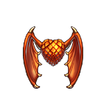

Получено: файл; исходный URL. Без перекодирования; при замене домена идентичность оригиналу не проверена, авторство не установлено. Страница: источник.


Крылья в Каньон
браузерная Зомби Ферма / Зомби Мания; платформа не уточнена- Тип
- Материал
- Покупка
- нет данных
- Продажа
- нет данных
- Как получить
- нет данных
- Применение
- нет данных
- Особенности
- нет данных
- Версия и дата
- браузерная Зомби Ферма / Зомби Мания; платформа не уточнена
Данные по источнику · браузерная Зомби Ферма / Зомби Мания; платформа требует проверки · дата URL не гарантирует дату редакции
Предварительно: Индивидуальная страница прочитана автоматически, подписи значков могут содержать ошибки; даты редакции и независимость от ЗомбиСити не установлены.. Требуется сверка.
- Основной блок страницы и подписи изображений
- Материал [иллюстрация: Крылья в Каньон] Крылья в Каньон Нельзя купить. Нельзя продать. Материал игры Зомби Ферма Крылья в Каньон нужен для поднятия главного зомбика с Твоей любовью по сюжету игры наружу. Создать их можно в одном батуте подземелья, использовать - в другом. Крылья в Каньон можно создать в батуте: Крылья в Каньон [иллюстрация: Крылья в Каньон] = 199 Красные драконы [иллюстрация: Красные драконы] + 1 Крылья в Копи [иллюстрация: Крылья в Копи] [иллюстрация: Стрелка] Назад в каньон Мексиканский [иллюстрация: Назад в Мексиканский каньон] Крылья в Каньон участвуют в создании: Крылья в ЗУ [иллюстрация: Крылья в ЗУ] = 199 Кактусы [иллюстрация: Кактусы] + 1 Крылья в Каньон [иллюстрация: Крылья в Каньон] [иллюстрация: Стрелка] Назад в пещеры ЗУ [иллюстрация: Назад в пещеры ЗУ] Крылья в Каньон участвуют в заданиях: Просьба [иллюстрация: Просьба]
Связанные сущности
нет проверенных связей — требуется сверка.